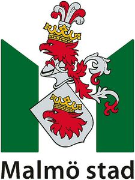

Trade Mark Journal No.2025/009 28 February 2025
WO0000001825623 (16,25,35,36,37,38,39,41,42,43,44,45)
Office of origin: European Union Intellectual Property Office (EUIPO)
Date of International Registration:30 August 2024
Date of designation in the UK:
30 August 2024

The mark contains the colours green, red, yellow, grey and black.
International priority date claimed: 20 March 2024
(European Union Intellectual Property Office (EUIPO))
(019001753)
- Class 16
- Printed matter; newspapers; periodicals; calendars; books; newsletters; photographs [printed]; seals [stamps]; stickers [decalcomanias]; paper stationery; adhesives for stationery or household purposes; typewriters, electric or non-electric; office requisites, except furniture; printing type; printing blocks; educational and instructional material.
- Class 25
- Clothing; footwear; headgear.
- Class 35
- Business management; business administration; office functions services; commercial or industrial management assistance; provision of business and commercial information; employment agency services; personnel recruitment; opinion polling; arranging of exhibitions for business purposes; administrative services for the relocation of businesses; personnel management consultancy; business investigations; arranging of exhibitions for advertising purposes; advertising.
- Class 36
- Insurance services; finance services; financial management; financial consultancy; trusteeship; trustee services; rental of apartments; financial information; financial sponsorship; financial evaluation; rental of offices [real estate].
- Class 37
- Civil construction services; street cleaning; construction information.
- Class 38
- Telecommunication services; information about telecommunication; communications by fibre optic networks; transmission of electronic mail; communications by cellular phones; communications by computer terminals; communications by telephone.
- Class 39
- Ambulance transport; car park services; transport of travellers by car; taxi transport; tour organising; storage of waste; booking of travel through tourist offices; rental of warehouses; water distribution; water supplying; hauling; rescue operations [transport]; bus transport; services for the arranging of tours; storage; transportation of waste.
- Class 41
- Educational and teaching services; arranging and conducting of competitions [education or entertainment]; arranging and conducting of conferences; providing sports facilities; education information; publishing services for books and magazines; rental of stadium facilities; publishing services; mobile library services; arranging and conducting of congresses; arranging and conducting of seminars.
- Class 42
- Scientific and industrial research; computer programming.
- Class 43
- Provision of food and drink; providing temporary housing accommodations.
- Class 44
- Hygienic and beauty care; veterinary and agricultural services; medical care.
- Class 45
- Legal services.
Malmö Kommun
Representative: AWA Sweden AB, Matrosgatan 1, SE-211 18 Malmö, SWEDEN